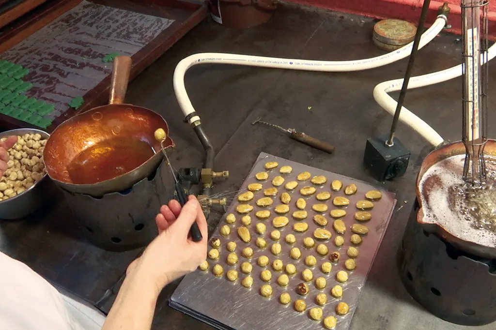
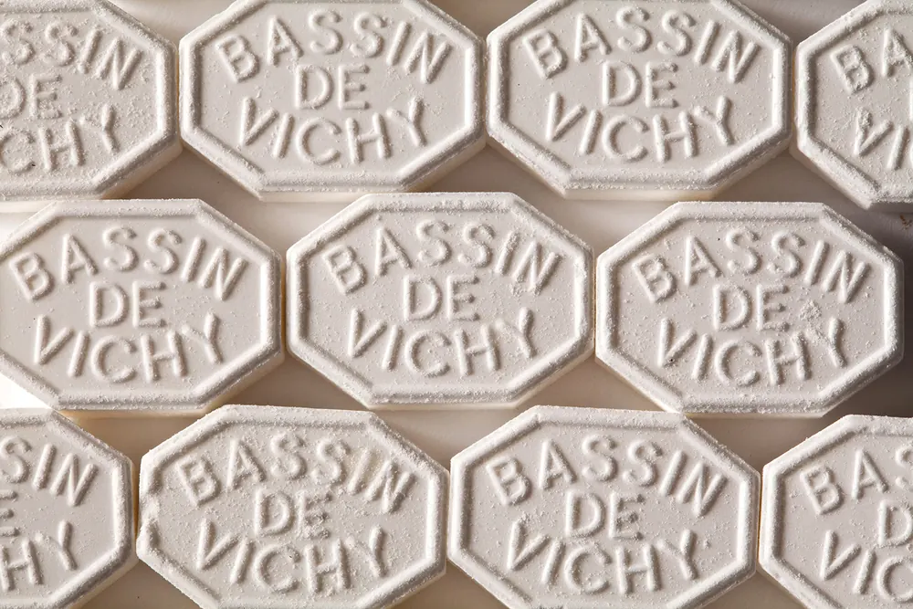
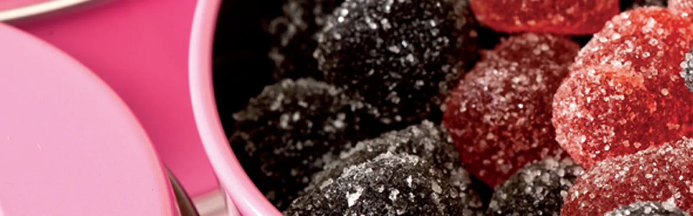

Artisanat français
Made in France, et même made in Auvergne
Moinet assure une fabrication artisanale et française depuis 1852, transmise de génération en génération.

Comme de véritables bijoux
Les bonbons glacés sont fabriqués à la main, un à un. Leur réalisation, très technique, nécessite plusieurs étapes de façonnage.
Il en va de même pour les nougats, caramels et pralines, toujours élaborés de manière traditionnelle. Enfin, tous les chocolats — tablettes, mendiants, ballotins ou sujets de Pâques et de Noël — sont façonnés de manière artisanale.
Découvrir les bonbons glacés
80 % de notre production
Les pastilles du Bassin de Vichy
Les sels minéraux extraits de l’eau de source sont la base de la fabrication des pastilles. C’est en 1932 que Rémi Moinet achète la Source Roger, située sur le Bassin de Vichy, et débute la fabrication de ses propres pastilles.
La gamme est diversifiée : anis, citron, orange, en plus de la traditionnelle pastille à la menthe. Moinet décline également des pastilles sans sucre et des mini-pastilles.
Large sélection
Une gamme de spécialités régionales
Sucres d’orge de Vichy, pâtes de fruits d’Auvergne, bonbons glacés du pays bourbonnais, menthe fondante, fondants aux fruits, gommes véritables, marrons glacés, gels de fruits, sucres cuits, chocolats, caramels, nougats, pralines.

Goûtez la différence
Retrouvez nos douceurs en boutique à Vichy, Clermont-Ferrand et Paris, ou directement en ligne.